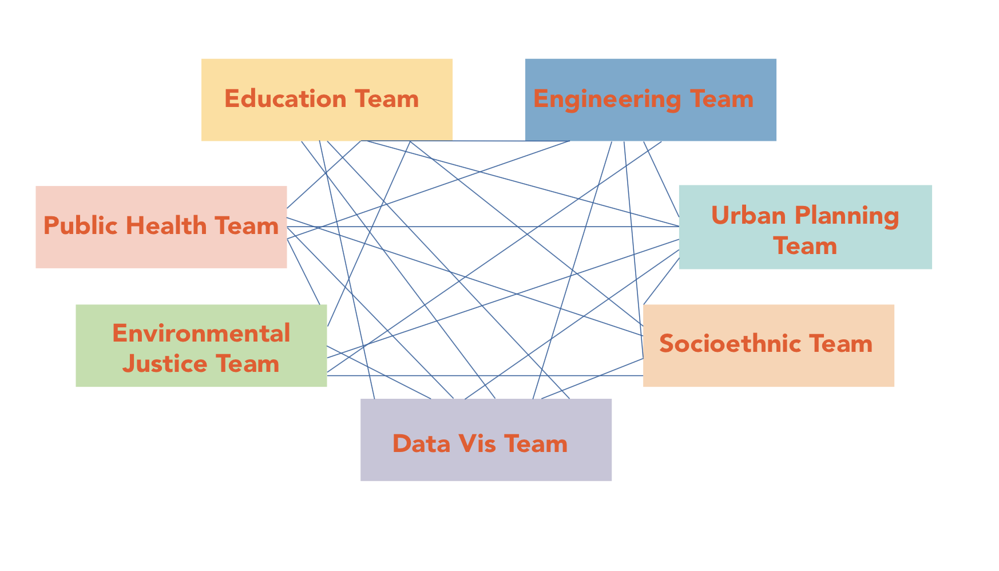
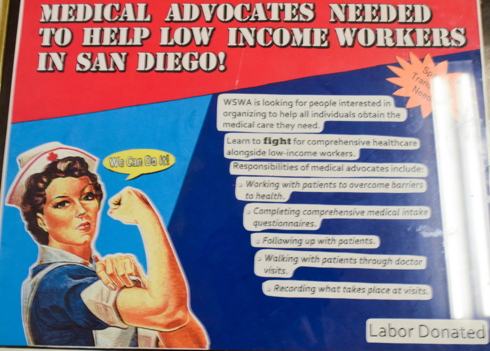

Get Involved
Students
We are always looking to involve passionate students who would like to develop a close relationship with communities in San Diego, who are interested in gaining a deeper understanding of health related issues, and who are enthusiastic about hands on learning. We welcome students from all disciplines to contribute their specific skills to our efforts.
Joining IHPSD Investigative or IHPSD in Action

If you are interested in joining the IHPSD Investigative Team or the IHPSD in Action Teams, join us at our weekly meetings or email us at ihpsducsd@gmail.com for more information. Also, don’t forget to follow our Facebook page for regular updates on our projects and emerging stories about the local communities!
General Community Service + Volunteer Opportunities in San Diego

If you are a student looking for community service or volunteer opportunities, please fill out this application form. Check out this Google spreadsheet linked here, where we regularly update opportunities across San Diego for student volunteers who have a wide range of time-commitments and interests.
UCSD Organizations
If you are a student organization looking to collaborate with us or create long-term partnerships with community organizations and local non-profits, we can connect you with groups that can develop mutually beneficial collaborations.
Email us introducing the purpose of your organization and expressing specific interest in creating community engagement, and we will do our best to connect you with a suitable community organization.
Community
We recognize that there are already robust community efforts to address healthcare, environmental justice, social equity, and many more important causes. If you are an organization or nonprofit serving a community in San Diego, we would like to support your goals and initiatives and work alongside your organization. If you are interested in creating a partnership with IHPSD, please
email us with details about your group.